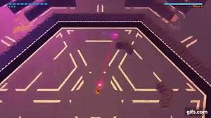
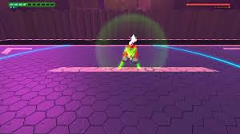

The Burst is a hunter who is adicted to the thrill of the hunt, she is incredibly skilled and on a scale from one to ten, she’s ans eleven . In terms of design well, she looks really stupid. It’s like someone put a shower curtain on a swimming instructor. When it comes to the fight, The Burst is quite a unique boss. Unlike most bosses in order to fight The Burst you have to find her first and like everything in this game,finding her isn’t easy.First of all, she is able to turn invisible allowing her to easily slip away.Also, while you try to find her and during some of the regular ranged fights she will try to shoot you with her sniper. There will be a red laser and circle around your feet.A single shot from her sniper will kill you. In order to avoid her sniper shots you must hide behind one of the walls in the massive arena.
She will also send drones that will follow and shoot you. Once you corner her you must dodge on of her sniper shots then hit her immediately after, if you don’t she will slip away and you have to find her again. Once you hit her she will raise the walls on that specific platform and you can actually fight her. She will launch exploding balls of energy and fire the occasional shockwave. Once you beat her first phase and she will send some drones after you, once you destroy them all the walls will come down and you have to find her again. This time instead of drones you will have to deal with yellow mines which are fortunately easy to dodge. Once you find her again she will start using purple homing shots. She will also charge up a shockwave which requires you to hide behind to hide behind cover to avoid. Other then the fact you are interupted by both drones and mines finding her is exactly the same. Once you find her she will run to the middle of the arena where the rest of the fight will take place. She will start of by getting into sniper position, hide behind wall until the last one is gone. You will then be able to fight her. She will either create a powerful blue shockwave where you must hide behind the wall and then head towards the center of the arena or she will perfom a melee combo followed up by a cannon shot, in which case you must hide behind a wall. The next next few phase are pratically the exact same except she has e few new shockwaves and she will summon robots. The final phase is absolute insanity, it is so crazy and cluttered that it is like some one flooded the arena with unblockable bullets. She will start of by flooding the arena with shockwaves fired from the top and sides of the screen. She will also fire her siganture sniper shots while doing all this so you have to dodge behind walls while dodging her shockwaves.

Next is her final melee phase and this time she is completely invisible.
"In order to fight and block her attacks you must listen for the audio queues and the flashes when she melee attacks.Once you deplete her health bar you will end the fight.